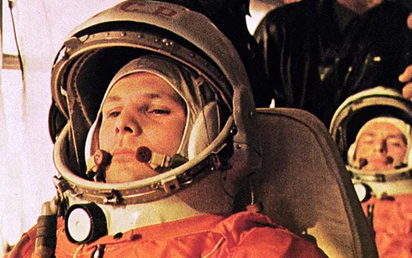
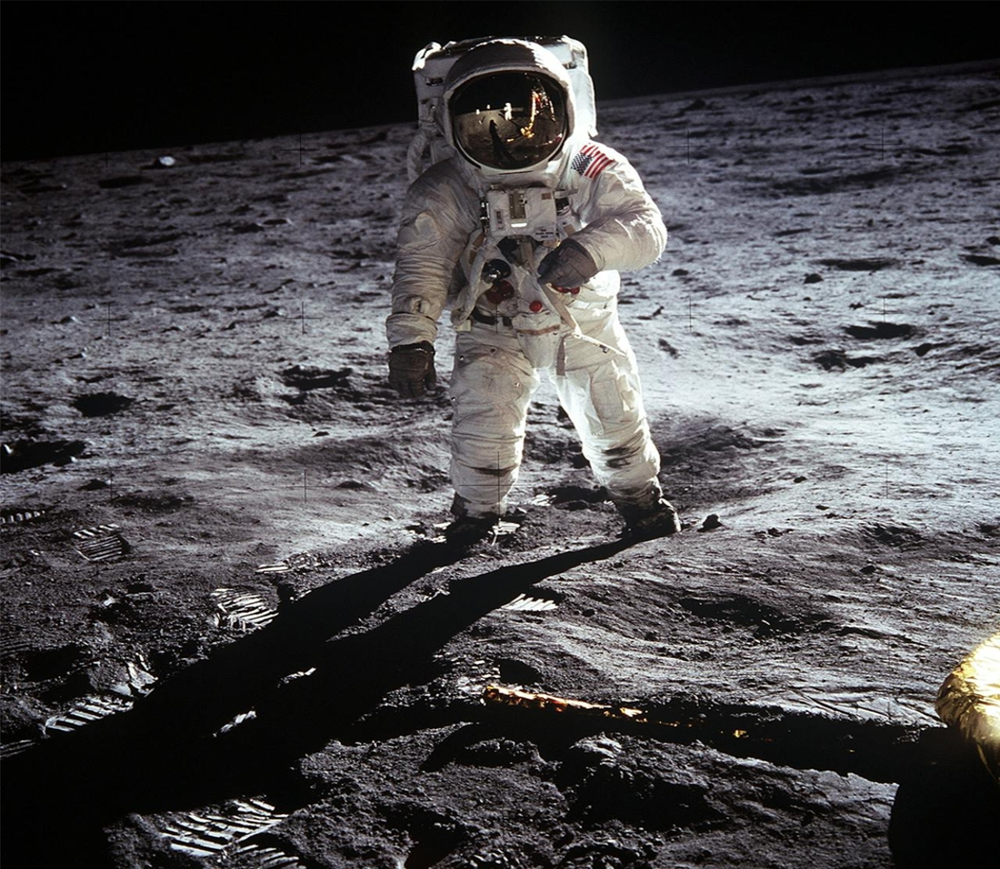
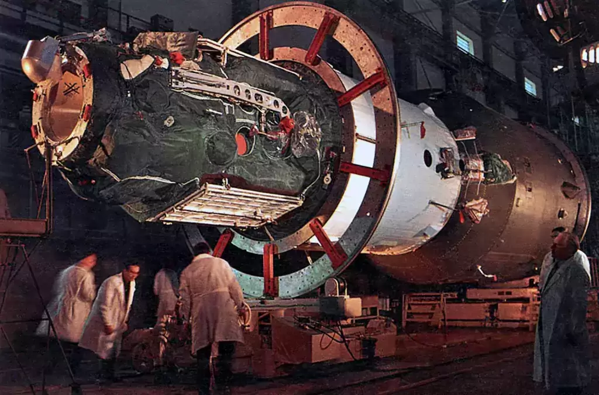
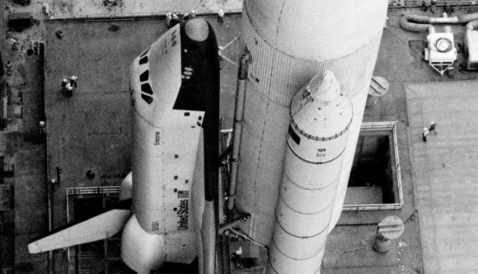
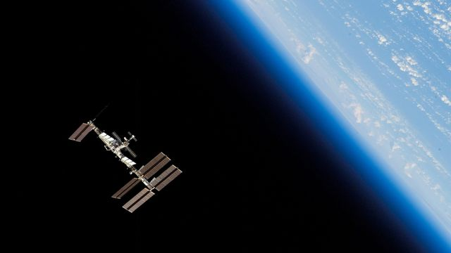
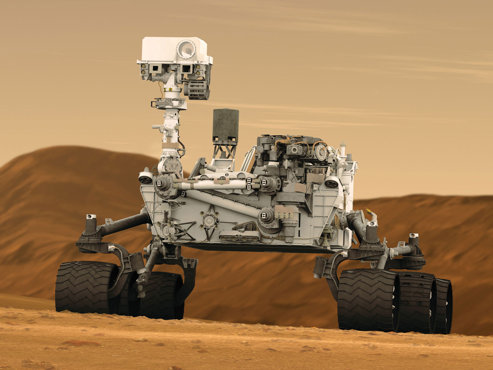
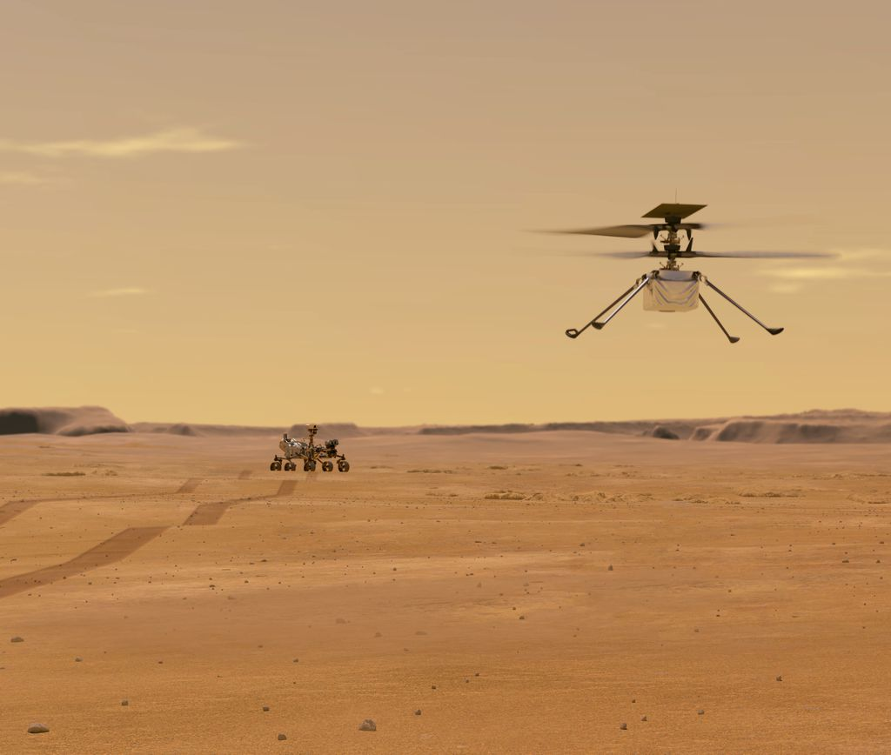

1957:
O primeiro satélite artificial.
Em 4 de outubro de 1957, a União Soviética lançou o Sputnik 1, o primeiro satélite artificial a orbitar a Terra. Este marco histórico desencadeou a corrida espacial entre os Estados Unidos e a União Soviética durante a Guerra Fria, Sendo o primeiro objeto artificial a orbitar a Terra. O Sputnik 1 abriu caminho para futuras missões espaciais e teve um grande impacto na consciência pública, marcando o início da era espacial.
1961:
O primeiro humano a orbitar a Terra.
Em 12 de abril de 1961, Yuri Gagarin tornou-se o primeiro humano a orbitar a Terra a bordo da espaçonave Vostok 1. Este marco histórico foi uma demonstração da capacidade da União Soviética de enviar um humano ao espaço e trazê-lo de volta em segurança. Gagarin completou uma órbita ao redor da Terra em cerca de 108 minutos, retornando em segurança após uma aterrissagem com paraquedas. Sua conquista inspirou futuras missões espaciais tripuladas e é lembrada como um momento emblemático na história da exploração espacial.

1969:
os primeiros humanos a pisar na Lua.
Em 20 de julho de 1969, Neil Armstrong e Buzz Aldrin, membros da missão Apollo 11 da NASA, realizaram um feito histórico ao se tornarem os primeiros humanos a pisar na Lua. A bordo do módulo lunar chamado Eagle, Armstrong desceu a escada do módulo e proferiu as famosas palavras: "Este é um pequeno passo para o homem, um salto gigantesco para a humanidade", enquanto Aldrin o seguia para se juntar a ele na superfície lunar. Esta conquista representou um marco significativo na história da exploração espacial, demonstrando a habilidade da humanidade de alcançar lugares distantes no cosmos e inspirando gerações futuras de cientistas, astronautas e exploradores.

1971:
a primeira estação espacial tripulada.
Em 19 de abril de 1971, a União Soviética lançou a estação espacial Salyut 1, marcando um marco histórico como a primeira estação espacial tripulada da história. A Salyut 1 foi projetada para ser ocupada por cosmonautas e servir como uma plataforma de pesquisa e experimentação em órbita terrestre. Essa conquista representou um avanço significativo na exploração espacial, abrindo caminho para a realização de estudos prolongados no espaço e demonstrando a capacidade da União Soviética na corrida espacial com os Estados Unidos durante a Guerra Fria.

1981:
o primeiro veículo espacial reutilizável.
Em 12 de abril de 1981, a NASA lançou o ônibus espacial Columbia, marcando o início de uma nova era na exploração espacial como o primeiro veículo espacial reutilizável. Ao contrário das naves espaciais anteriores, que eram descartadas após cada missão, o ônibus espacial foi projetado para ser reutilizado em várias viagens ao espaço. Isso representou um avanço significativo na tecnologia espacial, permitindo uma redução nos custos de lançamento e tornando as missões espaciais mais acessíveis.

1998:
o maior laboratório em órbita da Terra.
Em 20 de novembro de 1998, a NASA e a agência espacial russa Roscosmos lançaram o primeiro módulo da Estação Espacial Internacional (ISS), marcando o início de uma colaboração internacional histórica na exploração espacial. A ISS é um complexo orbital habitado por astronautas de várias agências espaciais, incluindo a NASA, Roscosmos, ESA, JAXA e CSA, e serve como um laboratório de pesquisa em órbita da Terra. Composta por vários módulos e laboratórios, a ISS possibilita experimentos científicos em áreas como biologia, física, materiais e tecnologia espacial. Esta estação espacial é um marco na exploração espacial humana e representa a cooperação global em busca de avanços científicos e tecnológicos no espaço.

2004:
Sondas em direção a Marte
Em 2004, a NASA lançou as sondas Spirit e Opportunity para explorar Marte, como parte da missão Mars Exploration Rover. Essas sondas buscavam investigar a geologia marciana e procurar sinais de água e vida passada. Ambas as sondas operaram bem além de suas expectativas iniciais de vida útil, fornecendo uma riqueza de dados científicos valiosos sobre o Planeta Vermelho.

2012:
O primeiro rover a pisar em marte
Em agosto de 2012, o rover Curiosity da NASA pousou em Marte com o objetivo de investigar sua habitabilidade. Essa missão foi um marco na exploração espacial, permitindo análises da composição do solo e das condições ambientais passadas que poderiam ter suportado vida microbiana. Os dados coletados têm contribuído significativamente para nosso entendimento de Marte.

2020:
procurando sinais de vida em Marte e preparando o solo
A missão Perseverance da NASA, lançada em julho de 2020, tem como objetivo buscar sinais de vida passada em Marte e preparar o terreno para futuras missões humanas. O rover está explorando a Cratera Jezero, uma antiga bacia de impacto, em busca de evidências de ambientes habitáveis no passado. Além disso, está testando tecnologias cruciais para a entrada, descida e pouso de astronautas em Marte.